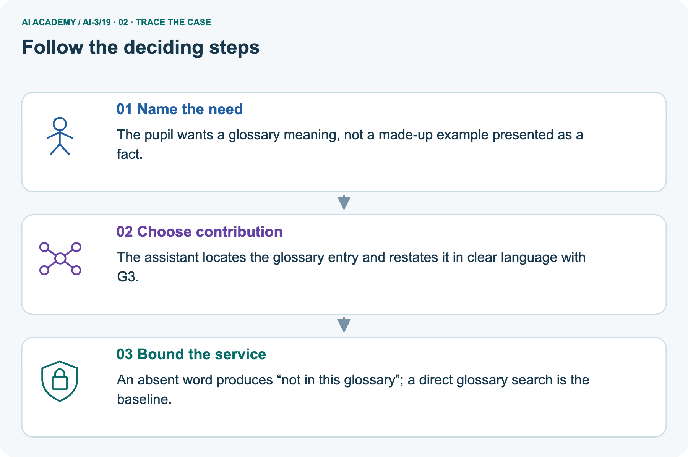
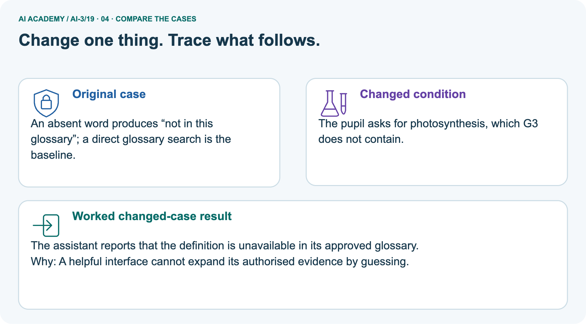
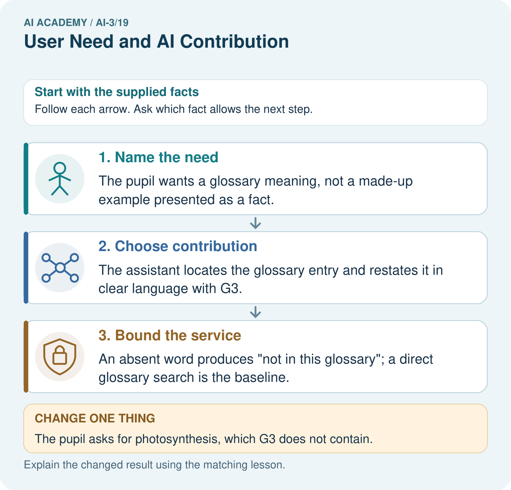
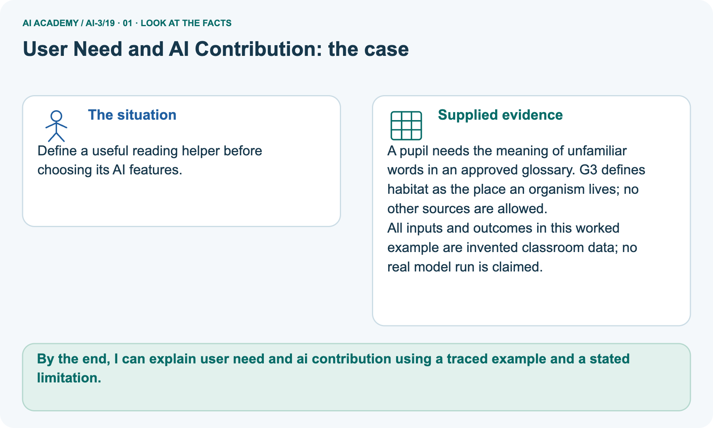
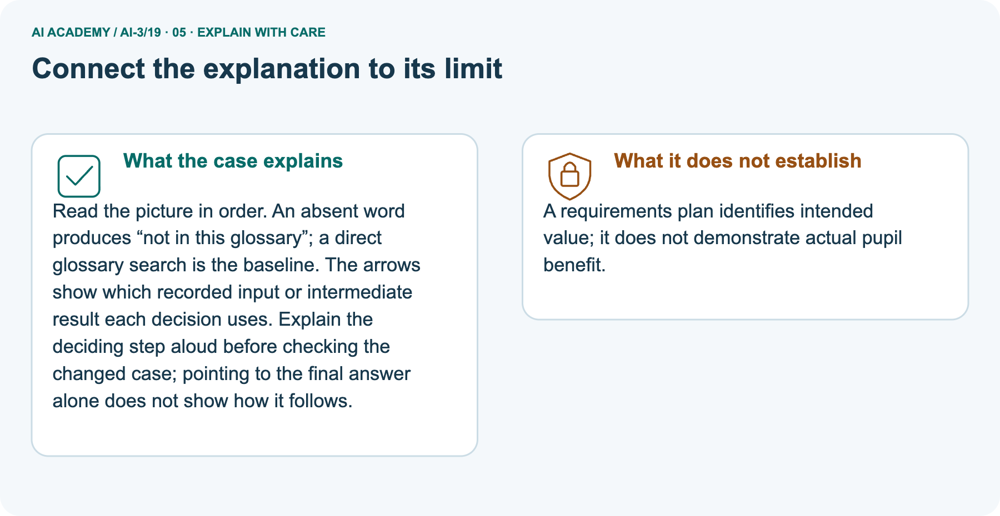
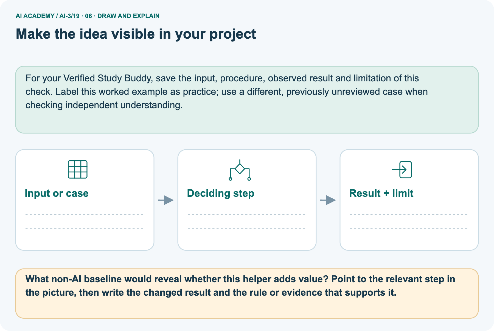

AI Academy · Level 3 · Grade 8 · Week 19 · Student lesson
User Need and AI Contribution
Learn to understand, design, build, test and explain AI systems responsibly.
Project: Verified Study Buddy
THE CONNECTED WEEK
Name the need. Compare the baseline. Justify the contribution.
Design a useful bounded helper before adding AI features.
Keep one habit: Need-to-test contract → glossary case → two design flows → evidence plan → independent equipment scope.
Main lesson · Section 1
What does the learner need help doing?
Choose AI only for a defined contribution that can be compared with a simpler alternative.
Your learning goals
I can explain the mechanism and terminology of capstone requirements and corpus.
I can apply the stated procedure to a new case with a traceable result.
I can identify an assumption or limitation and design a revealing follow-up.
Recall evidence and a baseline
Close your notes first. A rough first answer helps us choose the right starting point; it is not a score for your ability.
Recall Retrieval Augmented Generation: a fluent answer must still be checked against the selected evidence. Before designing a helper, state the user’s task and the simpler way of doing it.
Your end goal
By the end, I can explain user need and ai contribution using a traced example and a stated limitation.
Earlier wording, alternatives and picture transcripts
Your learning target
Remember before reading
Without opening the old lesson, explain one key idea from Retrieval Augmented Generation. Give an example and a mistake that the idea helps you avoid.
Without opening the old lesson, explain one key idea from Verify Numbers and Dates. Give an example and a mistake that the idea helps you avoid.
Without opening the old lesson, explain one key idea from Multimodal Evidence. Give an example and a mistake that the idea helps you avoid.
After trying, check the relevant lesson or ask your teacher. Change the part of your explanation that the evidence shows was wrong.
Week 19: User, Need, and AI Contribution
AI should solve a defined user problem better than a simpler alternative.

CREATOR MISSION
Compare AI and non-AI designs for a study need.
Creator name and date:
Readiness for the connected explanation
This week’s end goal
Main lesson · Section 2
Name the need before choosing the tool
A requirements plan is a proposal, not evidence of user benefit.
Understand user need and baseline
Start with a user, a task and a difficulty, rather than a feature list. Example: a pupil needs to locate an unfamiliar word in an approved glossary and understand its meaning. A baseline is a simpler way to meet the same need, such as direct glossary search. AI might help restate an entry, but that is a proposed benefit until evaluated.
If the baseline already works well, an AI feature needs a clear additional reason.
Connect the need to a bounded capstone
A grounded-assistant capstone begins with bounded requirements and a versioned permitted corpus. A baseline can be a manual lookup process using the same evidence.
Begin by writing the question the procedure is intended to answer. Identify the information already supplied, the information it will produce and the information still missing.
These are constructed classroom examples; they do not require live accounts, private records or an external service. Do not treat a plausible explanation as a measured outcome.
Earlier wording, alternatives and picture transcripts
PICTURE STORY
Notice → Predict → Explain
Begin with visible evidence. Do not explain more than the picture and information support.
MYSTERY
The learners must use user, need, and ai contribution to solve a problem. What information do they have? What decision or calculation do they make? What would count as evidence that it worked?
Three observations (what you can point to):
My prediction and the clue supporting it:
A closer explanation
Main lesson · Section 3
Turn the need into a checkable service boundary
Specify evidence, output, fallback and comparison before implementation.
The concrete need-to-test contract
| Requirement | Concrete glossary example |
|---|---|
| User and task | Pupil locating an approved word meaning |
| Permitted evidence | G3-v1 only: habitat = the place an organism lives |
| Baseline | Find and read the glossary entry directly |
| Possible AI contribution | Locate and clearly restate the same supported meaning with its source |
| Boundary | No answer for an absent entry; report not in this glossary |
| Evaluation plan | Compare supported completion, time, errors and help used on fresh matched tasks |
| Decision | Keep a feature only if observed value justifies its extra errors, effort and cost |
Preserve requirements and evaluation separation
Specify the user question, source authority, access, output/fallback contract and evaluation plan. Freeze corpus IDs and split cases before implementation. Keep teacher material out of student retrieval.
Before applying the procedure, write its units, denominator or decision boundary where relevant. A partner should be able to repeat each step using the same inputs.
If a required input is absent or violates the stated contract, record that condition explicitly instead of quietly replacing it with a convenient value.
Explain the deciding check
Point to the input, the deciding step and the result in this week’s visual. Explain the same step in ordinary words. A picture helps when you can say what each part represents.
Earlier wording, alternatives and picture transcripts
VISUAL MECHANISM
Input → Process → Output
Trace the information. At each stage, ask what changed and how you could test it.

↓

↓

Which stage could fail even when the other two are correct? Explain:
A closer explanation
Capstone requirements and corpus — evidence trace
Connect the picture and the explanation
Main lesson · Section 4
Compare useful help with an unbounded promise
A chatbot that answers everything is not a specification for a glossary need.
Four pictures with a purpose

Normal case: predict the result and deciding evidence.

Boundary case: identify the exact limit.

Missing information: name what must be clarified.

Transfer case: explain which procedure still applies.
Choose a revealing case
Which case is most likely to reveal a hidden assumption? Why?
Predict the supplied changed case
Change: The pupil asks for photosynthesis, which G3 does not contain.
Check after predicting
Prediction: The assistant reports that the definition is unavailable in its approved glossary.
Reason: A helpful interface cannot expand its authorised evidence by guessing.
Earlier wording, alternatives and picture transcripts
CASE GALLERY
Four Tests, Four Kinds of Evidence
A system is not understood until it survives more than one comfortable example.
NORMAL CASE: predict and name evidence. BOUNDARY CASE: predict and name evidence.
MISSING INFORMATION: predict and name evidence. TRANSFER CASE: predict and name evidence.
Change one thing in the pictured case
Main lesson · Section 6
Trace the glossary helper’s bounded contribution
Separate the user-need example from room-corpus planning practice.
Read the complete glossary scope
Define a useful reading helper before choosing its AI features.
A pupil needs the meaning of unfamiliar words in an approved glossary. G3 defines habitat as the place an organism lives; no other sources are allowed.
All inputs and outcomes in this worked example are invented classroom data; no real model run is claimed.
For this complete toy glossary, G3-v1 contains only habitat: the place an organism lives. Photosynthesis is absent. Both direct lookup and the proposed grounded helper must report that absence. The proposed helper may restate the supported meaning; it cannot add unauthorised factual content. No usability study, model run or measured learning gain is supplied.
Trace need, contribution and fallback



Read the picture one step at a time
Read the picture in order. An absent word produces “not in this glossary”; a direct glossary search is the baseline. The arrows show which recorded input or intermediate result each decision uses.
Explain the deciding step aloud before checking the changed case; pointing to the final answer alone does not show how it follows.
Predict asking for an absent word
Change one thing: The pupil asks for photosynthesis, which G3 does not contain. Predict the result before checking the explanation. What remains the same?
Check after predicting



Name the unmeasured benefit
A requirements plan identifies intended value; it does not demonstrate actual pupil benefit.
Read the labelled picture: What non-AI baseline would reveal whether this helper adds value? Point to the relevant step in the picture, then write the changed result and the rule or evidence that supports it.
Separate practice · Room-assistant corpus plan
Student room assistant corpus contains public register P, teacher-only guide T and current approval A. It must report approved room capacity or needs_review.
Authorised corpus contains P and A, excluding T. Baseline manually checks same-room current approval and capacity. Reserve complete, missing and conflicting cases before development.
Earlier wording, alternatives and picture transcripts
WORKED EVIDENCE
Reason Step by Step
Predict first. Then check each step. A correct answer without visible reasoning is incomplete evidence.

1. Need: turn approved notes into practice questions.
2. Simple template can create fixed question types reliably.
3. AI may add varied wording but also unsupported details.
4. Use AI only where benefit exceeds added verification and safety cost.
Recalculate, retrace, or restate the reasoning in your own representation:
CHECK Did the evidence answer the exact question? Did the total, path, or source record stay consistent?
A closer explanation
Compare the intermediate evidence with the final statement. Explain why each number or decision follows from the stated inputs.
The conclusion belongs to this scenario and procedure; changing the inputs, evaluation population or authority can change what it establishes. Retain the raw record so a later revision can be compared honestly.
Learn from the worked case
Cover the result before checking it. Say what is given, choose the procedure, and follow one step at a time. Then uncover the result and explain your first mismatch. Ask why a step is allowed, not only what number it produces.
A pictorial worked case: User Need and AI Contribution
The facts we will use



Why this result follows
What this example does not establish
Main lesson · Section 7
Find a feature mistaken for a benefit
Evaluate the actual user task rather than the presence of AI.
Repair the friendliness shortcut
Claim to repair: The AI helper sounds friendly, so it must improve learning. Friendly wording is not a learning outcome. First check whether the response preserves the glossary meaning and source. Compare it with direct lookup on the same kind of task, recording errors, time and help. A small classroom comparison can inform a local design choice; it does not establish a general educational benefit.
Keep predicted advantages separate from observed results.
Design a revealing follow-up
Earlier wording, alternatives and picture transcripts
ERROR DETECTIVE
Compare → Diagnose → Repair
Do not patch the answer. Find the earliest unsupported assumption, wrong step, or weak evidence.

| Evidence record | Expected | Actual | Likely cause / next test |
|---|---|---|---|
| normal case | works | ||
| boundary case | stated rule | ||
| missing input | safe response | ||
| fresh transfer | generalizes |
Repair one cause. Why is this repair better than changing several things?
A closer explanation
Complete the supported workbook tasks before attempting W4 independently. Record any hints or help used. After feedback, use the teacher's fresh retry rather than copying the earlier answer.
For a project, select a relevant new case, predict the outcome from the declared rule and preserve the result alongside any revision.
Main lesson · Section 8
Practise a bounded corpus plan with less help
Use room-assistant planning here; reserve the equipment assistant for the first independent attempt.
The plan-versus-performance limit
A complete capstone plan is not evidence that the implementation meets it; evaluate after building.
Complete the room-corpus W2
Practise with less help: Trace the worked case
Use workbook W2 for the connected example “Capstone requirements and corpus”. First fill the input and rule boxes. Try the middle steps before asking for a hint. After a hint, try the next step yourself.
| Plan | Do | Check |
|---|---|---|
| What is given? Which rule or procedure applies? | Record each intermediate step. | Does the result follow? What remains unknown? |
Repair an all-future-cases claim
Use the worked case for Capstone requirements and corpus. Proposed explanation: “The worked result establishes every future case”. Decide whether this explanation is supported.
Point to the step or supplied fact that decides; explain your repair if needed.
Answer on your own before discussion. If you are unsure, say which step you need help with.
Check your reasoning
Explain the glossary baseline
What non-AI baseline would reveal whether this helper adds value? Point to the relevant step in the picture, then write the changed result and the rule or evidence that supports it.
Explain the picture
Keep the independent task separate
This is supported practice. Keep the separately named independent case for an attempt before feedback.
Earlier wording, alternatives and picture transcripts
LOGIC STUDIO
Specify Before You Run
Prompts, schemas, retrieval, tool calls, and code are inspectable parts of one AI product.

SET task, audience, constraints, output_schema LOAD approved_context or retrieval_result CALL model or allowed_tool VALIDATE fields, claims, citations, and safety IF evidence missing: ask, retrieve, or abstain RETURN useful output + source trail + limitations
Trace one input. Which line changes the state or chooses a path?
A closer explanation
A useful check asks what would make the reasoning fail. Distinguish a failure to execute the declared procedure from a weakness in the procedure itself.
The first may require a correction; the second requires an explicitly revised method and new evidence. Preserve unsuccessful cases so an improved result cannot hide the original problem.
Explain your trace to a partner. Your partner points to one step to check. Swap roles on the next case. Each person writes their own explanation.
Main lesson · Section 9
Compare two complete designs for one supplied need
An interview is optional; the fictional learner card makes the exercise self-contained.
All supplied user and design facts
| Supplied fictional learner card | Complete task facts |
|---|---|
| Need statement | I can find a word slowly, but the helper sometimes gives facts outside our approved glossary. I want the approved meaning with its location. |
| Approved evidence | G3-v1 contains only habitat = the place an organism lives. No photosynthesis entry is supplied. |
| Design A · Baseline | Direct glossary search displays the entry unchanged, or not in this glossary. |
| Design B · Proposal | Search G3-v1, restate only its supported meaning, attach source ID; absent entry gives not in this glossary. |
| Resource constraint | No model/service cost or timing measurements are supplied. Record these as unmeasured rather than inventing a cheaper or faster winner. |
Write, sketch, compare and plan a fair check
Use the supplied learner card if no interview is available. Write a need statement and sketch A/B flows. For habitat, predict a supported meaning and source; for photosynthesis, predict the absent-entry fallback in both designs. Compare source faithfulness, successful task completion, time, effort, cost and accessibility, marking all unmeasured values unknown.
Plan a comparison with fresh matched tasks and record prior exposure and support; do not reuse a memorised example as independent evidence. If interviewing a willing classmate, record their actual words separately from this fictional card and avoid personal information. A sketch is not a user trial. Defend whether a model has a necessary role; choosing direct search is acceptable.
Keep the equipment-assistant assessment withheld.
Keep predictions and observations separate
| Test / input | Prediction | Actual | Evidence / calculation | Change or keep? |
|---|---|---|---|---|
| normal | ||||
| boundary | ||||
| missing | ||||
| fresh transfer |
What did the hardest test teach you that the normal test did not?
Before trying: what do I expect, and why? While trying: which step could first go wrong? Afterwards: what did I actually observe, and what should change? Keep “not run” if you only traced the procedure.
Earlier wording, alternatives and picture transcripts
EVIDENCE LAB
Predict → Test → Record → Explain
Keep expected and actual results separate. Surprises are useful data when recorded honestly.

Use the supplied fictional learner card, or a separately recorded optional classmate interview, to define one need. Compare direct lookup with a bounded grounded helper; record source support, fallback and unknown costs or benefits without inventing user-test results.
Plan → try → check
Main lesson · Section 14
Try alone: scope the fresh equipment assistant
Choose the evidence boundary and a simpler baseline before features.
Independent need and supplied scope
Student equipment assistant has public inventory I, restricted purchase ledger L and public booking notice B. Define eligible corpus, baseline and a missing-evidence test.
Plan the equipment assistant using only the stated public/restricted labels and question. No inventory quantities, booking decisions or live trial results are supplied; this assessment asks for a corpus boundary, baseline and missing-evidence test rather than a fabricated booking answer.
Your first attempt and help record
Attempt this case before feedback. Record any help. Earlier examples below are further practice; a case already practised with feedback cannot establish fresh transfer.
Your teacher has the independent answer and scoring criteria. Complete the matching workbook week to keep your practice evidence together.
Use feedback afterwards
Attempt the independent case before hints. Record whether you worked alone, used a hint or followed a model. After feedback, fix the first unsupported step and explain why it changed.
A later check uses a changed case, not a copied answer.
Earlier wording, alternatives and picture transcripts
Independent case: Apply a new case independently
Week 19 Independent application
Close the worked explanation. Apply the idea to this different question without copying.
A student needs the exact due date from a course notice. Should the design start by generating a plausible date or locating the notice? Explain the AI contribution.
My answer, with a trace, calculation or supporting evidence
Create and test
Change one relevant detail. Predict the result before testing. Include a boundary or missing-information case when it helps reveal a limit.
My changed input and expected result
Connect to your project
Justify exactly which Study Buddy stage uses AI and which stages remain deterministic.
The evidence I will keep
Transfer practice from the original programme
Students cannot find definitions in a 20-page handout. Compare an index with a grounded assistant. Define a success measure and a failure case for both.
Use feedback to improve
Main lesson · Section 11
Keep the project’s reason for using AI explicit
Every proposed feature needs a task and an evaluation plan.
This week’s contribution
For the Verified Study Buddy, write the learner’s specific task, current difficulty, non-AI baseline, permitted corpus, proposed AI contribution and fallback. Separate deterministic lookup and validation from generated wording. Define what evidence would justify the added feature. Keep features that fail to add value out of the current scope; a smaller reliable tool can better serve the need.
For your Verified Study Buddy, save the input, procedure, observed result and limitation of this check.
Label this worked example as practice; use a different, previously unreviewed case when checking independent understanding.
Retain the checkpoint and human choice
THIS WEEK’S CHECKPOINT Justify exactly which Study Buddy stage uses AI and which stages remain deterministic.
SYSTEM MAP Learner need → prompt/schema → approved sources/retrieval → model/tool → structured answer → verification → human decision
What will you add, change, or verify in the project this week?
What should remain under human control?
RESPONSIBLE DESIGN Collect only necessary information. Show uncertainty and limits. Never confuse fluent output with verified truth.
Earlier wording, alternatives and picture transcripts
CUMULATIVE PROJECT
Verified Study Buddy
Every week adds one inspectable piece. The system must show how it reached a result.

Evidence for your project
Main lesson · Section 16
Finish: name the need, baseline and evidence of value
A plan must later be tested against the actual user task.
Explain without notes
Close your notes. Explain this goal in your own words: Explain the mechanism and terminology of capstone requirements and corpus
Plan a changed-case return
If you are unsure, return to the worked picture and explain one arrow. If you are ready, change an input or assumption and justify your prediction.
Save your workbook evidence. At the next review, try a different case before opening your old answer.
Reference bank and extra practice
Choose the reference that helps your next step.
Your quick word guide
Reference · Section 5
Your quick word guide
Use the words to explain a particular step, record or limit.
Core vocabulary
| Word | My own example | Not this / boundary |
|---|---|---|
| user | The person who interacts with or relies on a system. | |
| need | A problem or desired outcome for the intended user. | |
| AI contribution | The specific part of a task an AI system is intended to help perform. | |
| simpler alternative | A less complex approach that may meet the same user need with fewer resources or risks. |
Terms for the connected explanation
| Word | Meaning |
|---|---|
| Requirement | A declared user-visible condition the system must satisfy |
| Corpus manifest | An inventory of source IDs, versions and access roles |
| Baseline procedure | A credible reference process on the same task |
Earlier wording, alternatives and picture transcripts
VOCABULARY LAB
Words You Can Use to Reason
A definition matters when you can recognize the idea, use it, and contrast it with a near-miss.


Words used in the closer explanation
Choose a stronger thinking challenge
Reference · Section 10
Choose a stronger thinking challenge
Choose the next useful challenge rather than treating the whole ladder as compulsory.
Pick your next step
1 • NAME: Define the concept without repeating the textbook.
2 • TRACE: Show the information, state, branch, calculation, or evidence path.
3 • APPLY: Solve a different example independently.
4 • CHALLENGE: Find a boundary case, counterexample, or unfair outcome.
5 • EXPLAIN LIMITS: Say when the result should not be trusted or used alone.
My strongest evidence of independent understanding:
Earlier wording, alternatives and picture transcripts
MASTERY
From Knowing the Word to Owning the Idea
Move upward only when you can produce evidence without copying the worked example.

Reference: check your explanation
Reference · Section 12
Reference: check your explanation
Use after practice. Scope the equipment assistant independently is the selected independent case.
Check the evidence and its limit
1. My fresh example, trace, calculation, or design:
2. My evidence that it works (include a boundary or missing-data case):
3. One limitation, fairness concern, or situation needing human review:
Self-check and record
SELF-CHECK □ I explained the mechanism □ I used evidence □ I tested a fresh case □ I named a limitation □ I can answer ‘why?’
Earlier wording, alternatives and picture transcripts
INDEPENDENT MASTERY PROOF
Checklist for explaining this week’s idea
Use after practice. Scope the equipment assistant independently is the selected independent case.

EXPLANATION CHECK Require eligible evidence, a non-AI baseline, missing-evidence behavior and no invented performance result.
Extra practice: Choose a narrow, testable contribution
Reference · Section 13
Extra practice: Choose a narrow, testable contribution
Try the question before opening its worked explanation.
Read the supplied case and question
Learners struggle to locate definitions in an approved chapter; a proposed chatbot answers everything.
Narrow the need and AI contribution.
Your explanation
Which detail supports the answer, and why does it matter?
Check after trying
Help locate and explain chapter definitions with references and unsupported-question handling. Compare a simple index or search first.
| Evidence or stage | Value or result |
|---|---|
| Need | Find chapter definitions |
| Simple baseline | Index or search |
| AI help | Explain with chapter references |
| Limit | Handle unsupported questions |
Earlier wording, alternatives and picture transcripts
Week 19 Worked case
Use the supplied details to practise the weekly concept before attempting the independent question. This case extends the illustrated lesson.
The situation
The question
Worked explanation
Explain it in your own words
Trace the supplied case visually
Choose a narrow, testable contribution
Learners struggle to locate definitions in an approved chapter; a proposed chatbot answers everything.
Narrow the need and AI contribution.
Help locate and explain chapter definitions with references and unsupported-question handling. Compare a simple index or search first.
Reference: original lesson checklist
Reference · Section 15
Reference: original lesson checklist
Use an additional checklist when it helps inspect your explanation.
Targets and evidence
| By the end, I can | How I will show it |
|---|---|
| Explain the mechanism and terminology of capstone requirements and corpus | Explain the deciding step, show a trace or test, and state one limit. |
| Apply the stated procedure to a new case with a traceable result | Explain the deciding step, show a trace or test, and state one limit. |
| Identify an assumption or limitation and design a revealing follow-up | Explain the deciding step, show a trace or test, and state one limit. |
Keep your route and first prediction
Remember → watch and explain → try with help → investigate → try independently → keep project evidence. Your teacher may spread this lesson across several classes.
Keep your first prediction. Compare it with what the evidence shows and explain any change.
Earlier wording, alternatives and picture transcripts
Start with this question: Define a useful reading helper before choosing its AI features.
Extra practice: pictures, repair and feedback
Reference · Section 17
Extra practice: pictures, repair and feedback
Attempt each question before opening its explanation. Use one browser or paper copy.
First supported question
Define a useful reading helper before choosing its AI features.
Which labelled step matches this detail? An absent word produces “not in this glossary”; a direct glossary search is the baseline.
1. Bound the service
2. Name the need
3. Choose contribution
Hint if needed: Read the steps in the pictorial case. Match the supplied detail to the stage that performs or records it.
After your attempt, compare with the supported explanation: Bound the service An absent word produces “not in this glossary”; a direct glossary search is the baseline. Read the picture in order.
An absent word produces “not in this glossary”; a direct glossary search is the baseline. The arrows show which recorded input or intermediate result each decision uses.
Explain the deciding step aloud before checking the changed case; pointing to the final answer alone does not show how it follows.
Practice 1: explain the deciding evidence
Check the first explanation
Practice 2: explain the deciding evidence
Changed-case question
Changed-case practice: The pupil asks for photosynthesis, which G3 does not contain. Which conclusion is supported by the supplied facts?
1. The assistant reports that the definition is unavailable in its approved glossary.
2. This one example guarantees correct results for every future input.
3. We can decide the result without examining the changed input or the procedure.
Hint if needed: Use the changed condition and the deciding step in the pictorial trace. The answer must say what follows from those facts.
After your attempt, compare with the supported explanation: The assistant reports that the definition is unavailable in its approved glossary. A helpful interface cannot expand its authorised evidence by guessing.
Check the changed case
Repair a missing building block
Repair and save your work
Review Retrieval Augmented Generation (ai-3/18). Goal: Explain the mechanism and terminology of building a grounded answer. Short practice: Which part of the source supports a two-minute melting claim?
Point to the relevant step in the picture, then write the changed result and the rule or evidence that supports it.. Return to this week and explain what you changed.
Review Verify Numbers and Dates (ai-3/16). Goal: Verify a numeric claim using its source, denominator and units. Short practice: Which part can be corrected immediately from existing evidence, and which needs follow-up?. Return to this week and explain what you changed.
Review Multimodal Evidence (ai-3/13). Goal: Keep visible evidence, hidden contents and caption claims separate. Short practice: Why were both “exactly three” and “exactly five” unsupported before opening the box?. Return to this week and explain what you changed.
Use Download completed work in the hosted lesson to export your answers, reflections, practice feedback and code-run evidence. Open the HTML copy to read or print it.
Drafts stay in this browser when storage is available; clear drafts on a shared device.
Earlier wording, alternatives and picture transcripts
Use this supported practice once, in the browser or on paper. Keep the reserved independent assessment for a separate first attempt before teacher feedback.
Keep your completed work
Reference: the six-picture journey
Reference · Section 18
Reference: the six-picture journey
Revisit the picture that serves the current question; key diagrams already sit beside the main explanation.
01. User Need and AI Contribution: the case



Define a useful reading helper before choosing its AI features. Supplied facts: A pupil needs the meaning of unfamiliar words in an approved glossary.
G3 defines habitat as the place an organism lives; no other sources are allowed. All inputs and outcomes in this worked example are invented classroom data; no real model run is claimed.
Point to the given fact that matters most. Explain why it matters.
02. Follow the deciding steps
Name the need: The pupil wants a glossary meaning, not a made-up example presented as a fact. → Choose contribution: The assistant locates the glossary entry and restates it in clear language with G3. → Bound the service: An absent word produces “not in this glossary”; a direct glossary search is the baseline.
Point to each numbered stage and explain which recorded input it uses.
03. Capstone requirements and corpus — evidence trace
![Capstone requirements and corpus — evidence trace. Student room assistant corpus contains public register P, teacher-only guide T and current approval A. It must report approved room capacity or needs_review. | Specify the user question, source authority, access, output/fallback contract and evaluation plan. Freeze corpus IDs and split cases before implementation. Keep teacher material out of student retrieval. | Authorised corpus contains P and A, excluding T. Baseline manually checks same-room current approval and capacity. Reserve complete, missing and conflicting cases before development.](../assets/academy-story-ai-3-19-03.png)

Capstone requirements and corpus — evidence trace. Student room assistant corpus contains public register P, teacher-only guide T and current approval A.
It must report approved room capacity or needs_review. | Specify the user question, source authority, access, output/fallback contract and evaluation plan. Freeze corpus IDs and split cases before implementation.
Keep teacher material out of student retrieval. | Authorised corpus contains P and A, excluding T. Baseline manually checks same-room current approval and capacity.
Reserve complete, missing and conflicting cases before development.
Read the labels and values. Explain the relationship the model shows.
04. Change one thing. Trace what follows.
Original case: An absent word produces “not in this glossary”; a direct glossary search is the baseline. Changed condition: The pupil asks for photosynthesis, which G3 does not contain.
Expected result: The assistant reports that the definition is unavailable in its approved glossary. Reason: A helpful interface cannot expand its authorised evidence by guessing.
Predict before checking the worked changed-case result. Name what changed and what the supplied facts allow you to conclude.
05. Connect the explanation to its limit



Read the picture in order. An absent word produces “not in this glossary”; a direct glossary search is the baseline. The arrows show which recorded input or intermediate result each decision uses.
Explain the deciding step aloud before checking the changed case; pointing to the final answer alone does not show how it follows.
Limit: A requirements plan identifies intended value; it does not demonstrate actual pupil benefit.
Explain the case, then point to a limit on the claim.
06. Make the idea visible in your project



For your Verified Study Buddy, save the input, procedure, observed result and limitation of this check.
Label this worked example as practice; use a different, previously unreviewed case when checking independent understanding. Draw your input, deciding step, result and limit.
Supported question: What non-AI baseline would reveal whether this helper adds value? Point to the relevant step in the picture, then write the changed result and the rule or evidence that supports it.
Draw your project trace and justify the deciding step using evidence.